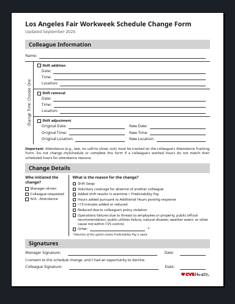
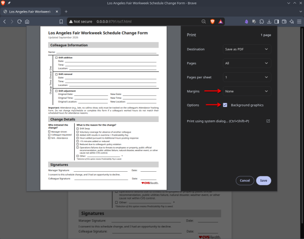

Los Angeles Fair Workweek Schedule Change Form
A printable form for requesting a schedule change (shift addition, renewal, or adjustment) in accordance with the Los Angeles Fair Workweek Ordinance.

Open FormClick the image above or the button to open the form.
How to print
- Open the form.
- Press Ctrl+P (Cmd+P on Mac), or use your browser's Print option.
- Set Margins → None.
- Enable Background graphics.
- Print, or save as PDF.


Notes
- Recommended settings: Margins = None and Background graphics = checked.
- This is an unofficial page provided for convenience. The form may be updated; always use the latest version.
- For work-related questions, follow your applicable store or district procedures.
About this version
The redesigned form improves clarity, spacing, and consistency while keeping the same basic purpose and one-page format. Change reasons and checkboxes are now grouped inside the sections they belong to, writing areas are better balanced, structural dividers are clearer, and signatures/dates align more cleanly.
Using HTML/CSS is also an improvement over a Word document: the form is easy to maintain, version-control, and print to PDF, and the only software needed to view or use it is a web browser.